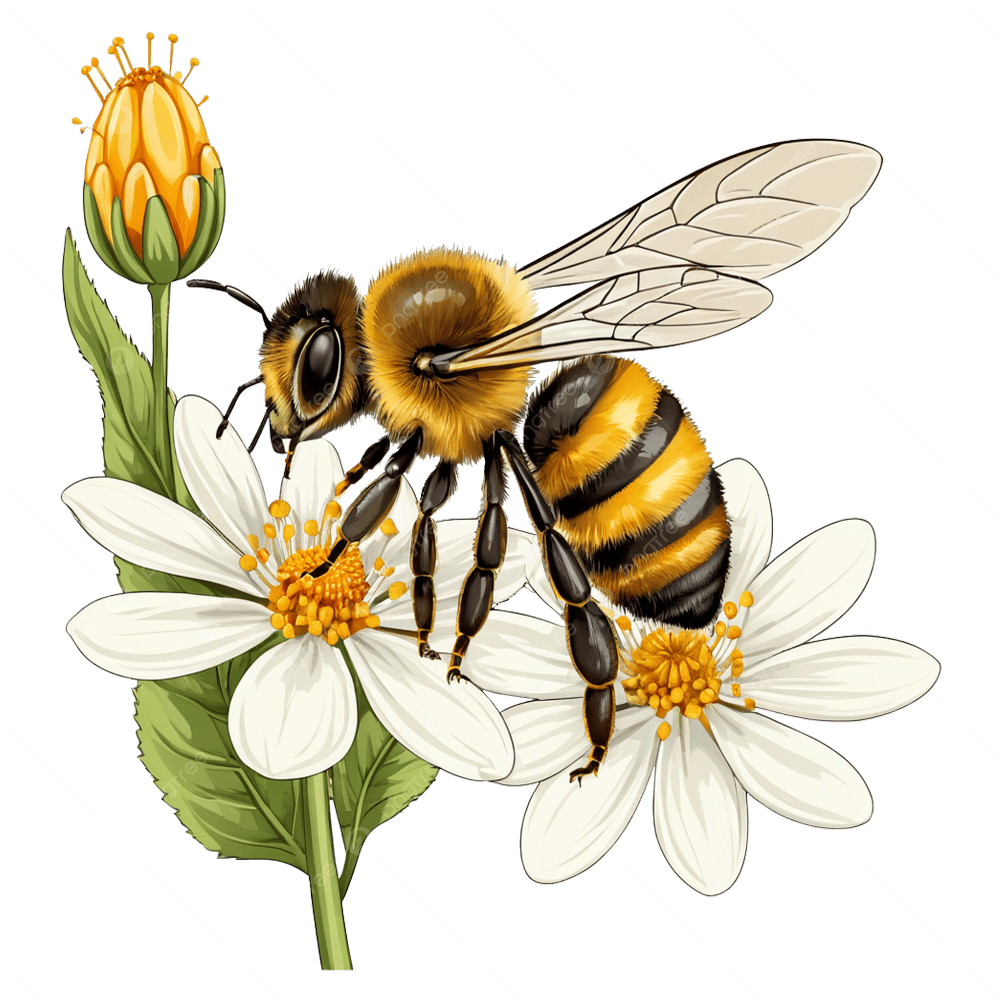
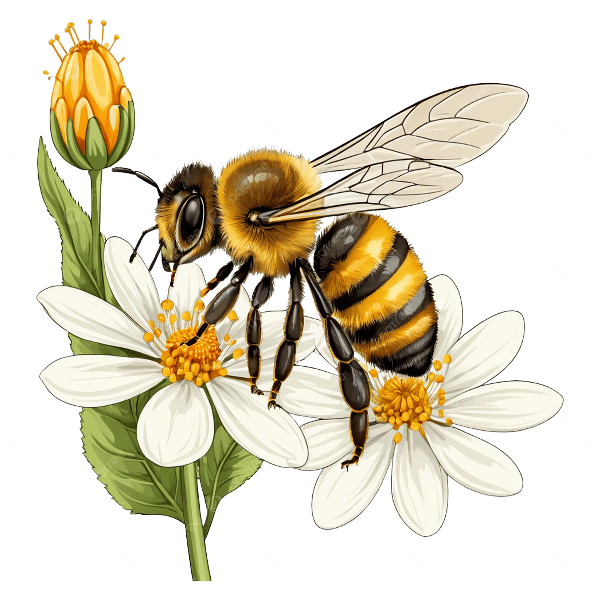
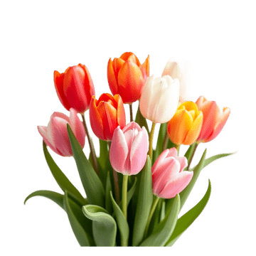
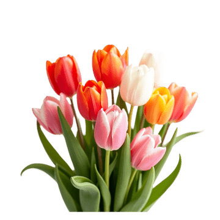

HOLA, BIENVENIDO/A
Este es un lugar creado con cariño, donde comparto mis gustos, mis pasatiempos y mi camino como estudiante. Siéntete libre de explorar y conocerme un poco más 🌷
“Esta es mi pequeña esquina que atesoro con mucho cariño en el internet.” 💌


Cada amanecer es una página en blanco que la vida te regala; no importa cuántos borradores hayas escrito antes, hoy tienes la oportunidad de trazar nuevas líneas con valentía, pintar tus sueños con colores más vivos y caminar con la certeza de que cada paso, por pequeño que parezca, te acerca a la mejor versión de ti mismo.
 

¿Quién soy?
Me gusta mi nombre porque siento que me representa: es dulce como su sonido y fuerte como su significado 🍯🐝. Melissa me recuerda a esfuerzo, ternura y sensibilidad, cosas que valoro mucho en mí ✨🌷
Estudio Ingeniería Informática

Me encanta aprender sobre programación, ya que desde pequeña sentí un gran interes en la tecnología y la programación. Quiero crear páginas web y videojuegos que sean entretenidos.
Tengo 17 años

Tengo 17 años y estoy comenzando una etapa nueva en la universidad. Todavía estoy descubriendo quién soy, qué me gusta y qué tipo de persona quiero ser en el futuro.
Me gusta ver películas

Me encanta ver películas en casa, ponerme cómoda, disfrutar algo rico y dejar que cada historia me haga sentir diferentes emociones.
 

Qué hago ahora
Primer ciclo de Ingeniería Informática
Actualmente estoy en mi primer ciclo de Ingeniería Informática en la Universidad Peruana Cayetano Heredia. Estoy sumergiendome en un ámbiente nuevo donde conocere a diferentes tipos de personas, aprendere cosas nuevas, conocere lugares nuevos y podré hacer amigos.
A veces me siento nerviosa, pero también emocionada de saber que cada experiencia me ayudará a ser una profesionar exitosa en el futuro.
Cursos que llevo este ciclo
- Cálculo para Ingeniería.
- Química General.
- Desarrollo Personal y Autonomía.
- Comunicación y redacción I.
- Filosofía y ética, entre otros.


Lo que más me emociona

Me emociona empezar en la programación desde lo más básico, descubrir cómo operan las computadoras y, con el tiempo, desarrollar mis propios proyectos. Además, me inspira unir la informática con la ciencia y el ámbito médico para aportar y ayudar a otras personas ✨🧬
“Aunque el camino sea difícil, sé que poco a poco todo esfuerzo se convierte en aprendizaje.” 💻🌸
Mis metas & Curiosidades Sobre Mí
Lo que quiero lograr y algunos datos curiosos sobre mí
Metas a corto plazo
- Organizar bien mi tiempo para aprobar todos los cursos del ciclo.
- Construir una base sólida en matemáticas y programación.
- Mejorar mi inglés poco a poco.
- Diseñar más proyectos web bonitos para practicar.


Metas a largo plazo
- Convertirme en una ingeniera informática.
- Trabajar en proyectos donde pueda combinar la tecnología y salud.
- Postular a becas y oportunidades en el extranjero.
- Seguir aprendiendo toda la vida y nunca perder mi creatividad y curiosidad.


Curiosidades sobre mí
- Me gusta ver peliculas en mi cuarto mientros como palomitas.
- Amo los gatos y los peluches con cara tierna.
- Me gusta hacer apuntes bonitos que me ayuden a aprender.
- Disfruto pasar tiempo en casa dibujando y escuchando música.
- Sueño con crear cosas nuevas que ayuden a mi projimo y a la humanidad.


👨👩👧👦 Mi Familia
Mi familia es mi lugar seguro. Son las personas que me acompañan en cada etapa, que se alegran por mis logros y me sostienen cuando algo no sale como esperaba.
Gracias a ellos aprendí que no importa cuán grande sea el sueño, siempre es más bonito cuando tienes a alguien que te dice: “yo creo en ti”.
“La familia no siempre es perfecta, pero es el abrazo que siempre quiero volver a encontrar.” 💗


Mamá
Es la persona que siempre me pregunta si ya comí. Su manera de decir “te quiero” está en cada detalle y en cada consejo.

Papá
Me motiva a seguir estudiando y a no rendirme. Cree en mi futuro incluso cuando yo tengo dudas.

Hermano
Con quien comparto risas, peleítas pequeñas y muchos secretos. Siempre termina sacándome una sonrisa.

Mascota
No habla, pero entiende todo. Es mi compañía silenciosa cuando estudio y mi recordatorio de que siempre hay tiempo para jugar.


🏠 Mi hogar & 🌿 Mi lugar favorito para visitar
El Callao, mi hogar
El Callao es el lugar donde crecí y donde tengo muchos recuerdos importantes. Es mi hogar, con su mar, su puerto, sus calles y su gente. Cada rincón del Callao me recuerda a momentos con mi familia, risas con amigos y atardeceres que parecen pintar el cielo de colores pastel.
Aunque a veces pueda ser ruidoso o caótico, para mí siempre será el lugar al que quiero volver después de un día largo. Where están mis raíces, mis historias y las personas que quiero.
“El Callao no es solo un lugar en el mapa, es el espacio donde mi corazón aprendió lo que significa la palabra hogar.” ⚓🌊

Oxapampa, mi lugar favorito para visitar
Entre todos los lugares que he conocido, Oxapampa se ha convertido en uno de mis favoritos para visitar. Es un lugar donde el aire se siente más puro, los paisajes parecen sacados de una postal y el tiempo pasa un poquito más lento.
Me gusta porque combina montañas, verde por todas partes, casas de madera y una tranquilidad que no siempre se encuentra en la ciudad. Caminar por sus calles, ver la neblina en la mañana y escuchar los sonidos de la naturaleza me hace sentir en paz.
Además, Oxapampa me recuerda que el Perú es muy diverso y hermoso. Visitarlo me llena de ganas de seguir conociendo más lugares y valorar lo que tenemos.
Además, Oxapampa me recuerda que el Perú es muy diverso y hermoso. Visitarlo me llena de ganas de seguir conociendo más lugares y valorar lo que tenemos.
“Oxapampa es ese lugar donde mi mente descansa, mi corazón se calma y mis ojos se enamoran del paisaje una y otra vez.” 🌿⛰️


🎨 Pasatiempos
En mis ratos libres me gusta hacer cosas que me desconecten un poquito del estrés y me recuerden que también está bien descansar y jugar.
- 📚 Leer libros de ciencia ficción y fantasía.
- 🚶 Pasear en mis ratos libres y observar el cielo.
- 🎶 Escuchar música que me acompañe mientras estudio.
- 🍿 Ver películas o series populares.
- 🎨 Dibujar y pintar cosas interesantes y bonitas.
- 🐶 Distraerme jugando con mi mascota.


“Un buen descanso también forma parte del progreso.” ✨
📚 Mis 10 Libros Favoritos
Algunos de estos libros me han inspirado, otros me han hecho llorar de la nada, pero todos han dejado algo en mí.

Harry Potter
Una saga mágica.

El Señor de los Anillos
Aventura épica.

Cien años de soledad
Realismo mágico.

Orgullo y Prejuicio
Romance y crítica social.

El retrato de Dorian Gray
Poético y filosófico.

El conde de Montecristo
Venganza y justicia.

1984
Visión oscura del futuro.

Viaje al centro de la Tierra
Aventura científica.

Lord of the Mysteries
Fantasia y misterio.

Asesinato para principiantes
Suspenso.
🍴 Comidas Peruanas
La comida peruana siempre me recuerda a reuniones familiares, domingos de casa llena y momentos felices alrededor de la mesa. 🥰

Ceviche
Pescado fresco marinado en limón.

Lomo Saltado
Salteado con papas y verduras.

Ají de Gallina
Cremoso y reconfortante.

Arroz con Pollo
Clásico con culantro.

Papa a la Huancaína
Salsa de ají amarillo.
🏫 Mi Universidad
Aquí quiero guardar algunos recuerdos de mi universidad, sus pasillos, aulas y rincones especiales.
:quality(75)/arc-anglerfish-arc2-prod-elcomercio.s3.amazonaws.com/public/J4XDLJLAO5HNZFXGXY5MTE6UB4.jpg)


Poco a poco iré agregando más fotos de momentos especiales en la universidad. ✨

🎯 Metas y Objetivos
Corto plazo: organizar mis estudios y terminar el ciclo con buenas notas.
Mediano plazo: desarrollar un portafolio con proyectos bonitos.
Largo plazo: postular a becas internacionales y trabajar en algo que una tecnología y salud.